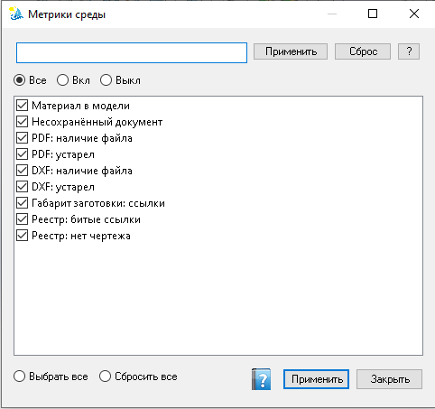

Показатели на панели
Какие показатели работы в SOLIDWORKS и среде показывать на панели «Агент». Это справочная сводка для оператора: включать все не обязательно — для повседневной работы достаточно нескольких привычных пунктов или вовсе пустой сетки.
Как открыть
Панель «Агент» → кнопка … у сетки показателей.

Окно выбора: фильтр по имени, переключатели Все / Вкл / Выкл, список с флажками, внизу «Выбрать все» / «Сбросить все», Применить и Закрыть.
Зачем это нужно
Показатели помогают видеть «здоровье» сессии CAD и связанные артефакты (реестр, DXF/PDF), если вы пользуетесь помощником. Они не заменяют команды ленты и не обязательны для реестра или экспорта.
Элементы окна
| Элемент | Назначение |
|---|---|
| Поле фильтра + Применить / Сброс / ? | Отбор строк списка по названию (маски — как в других формах). «Сброс» очищает поле фильтра. «?» — справка по маскам. |
| Переключатели Все / Вкл / Выкл | Показать все метрики, только уже включённые на панели или только выключенные. Удобно быстро найти, что ещё не выведено в сетку. |
| Список с флажками | Каждая строка — показатель. Галочка = показывать на панели «Агент» после применения. |
| Выбрать все / Сбросить все | Отметить или снять все видимые (с учётом фильтра) строки списка. |
| Применить | Сохранить набор видимых показателей на панели «Агент». |
| Закрыть | Закрыть окно. Без «Применить» изменения флажков не сохраняются. |
| Кнопка справки (иконка) | Этот раздел справки. |
Примеры показателей
Конкретный набор зависит от профиля в %ProgramData%\VELUM. На скриншоте, например:
- Материал в модели — назначен ли материал;
- Несохранённый документ — есть ли несохранённые изменения;
- PDF / DXF: наличие файла, устарел — состояние артефактов экспорта;
- Габарит заготовки: ссылки — связанные проверки габарита;
- Реестр: битые ссылки, нет чертежа — целостность реестра документов.
Включайте на панели только то, чем реально пользуетесь. Подробности по отдельному показателю (если доступны) открываются из сетки на панели — окно детали «кирпичика» метрики.